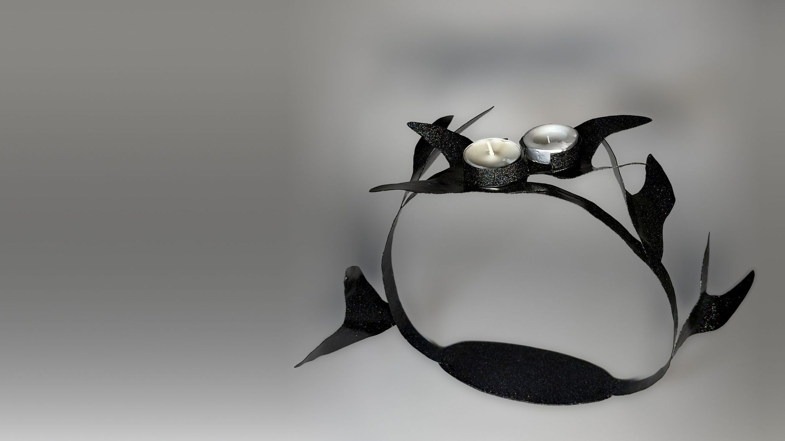
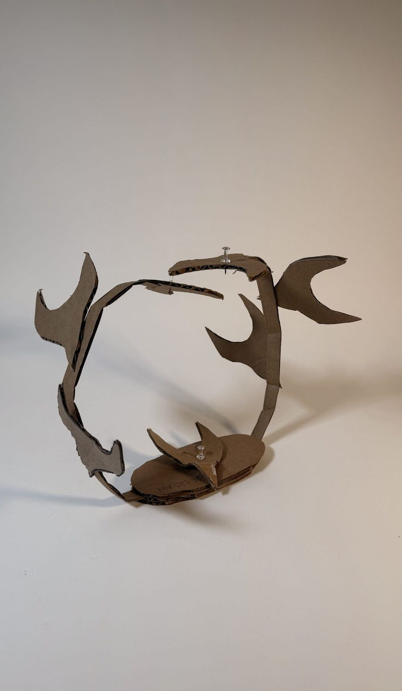
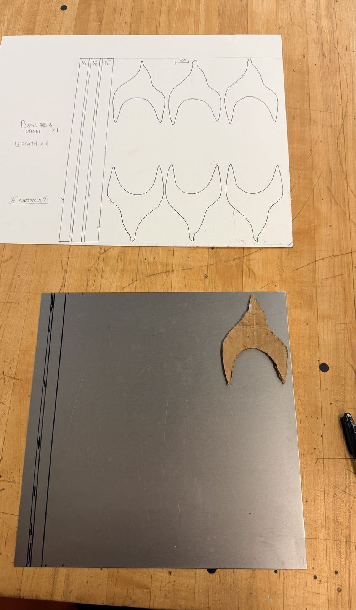
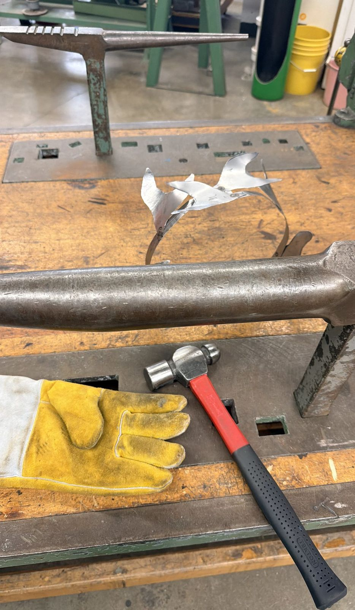
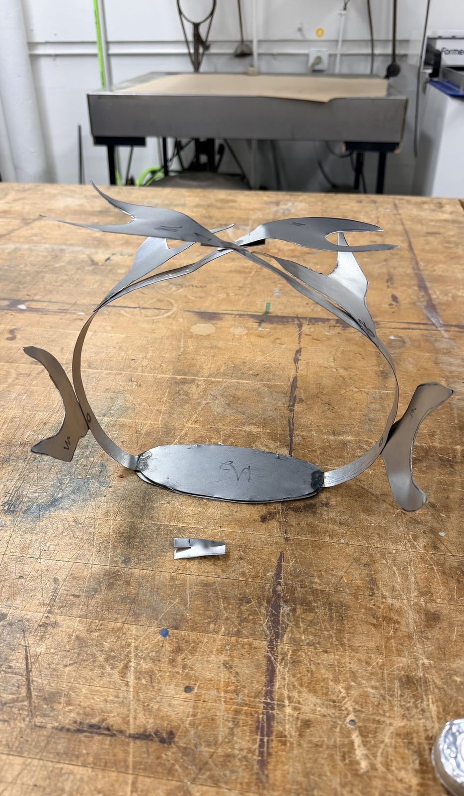
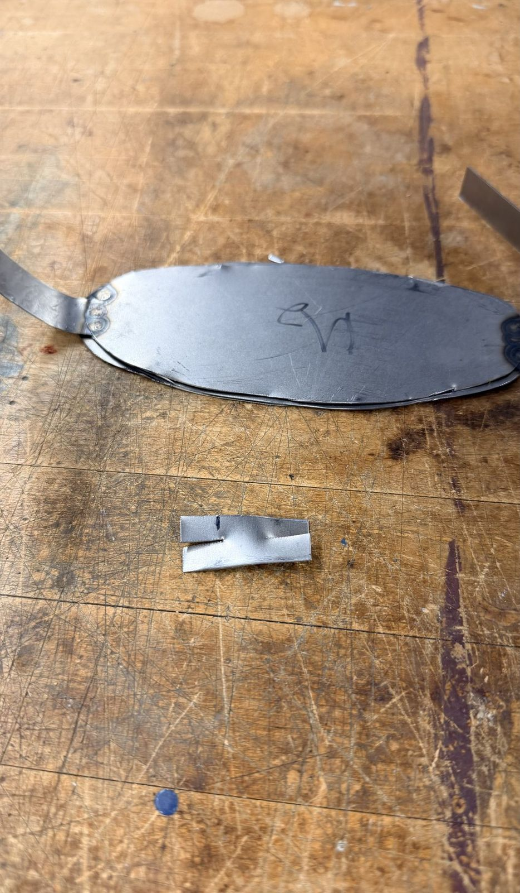
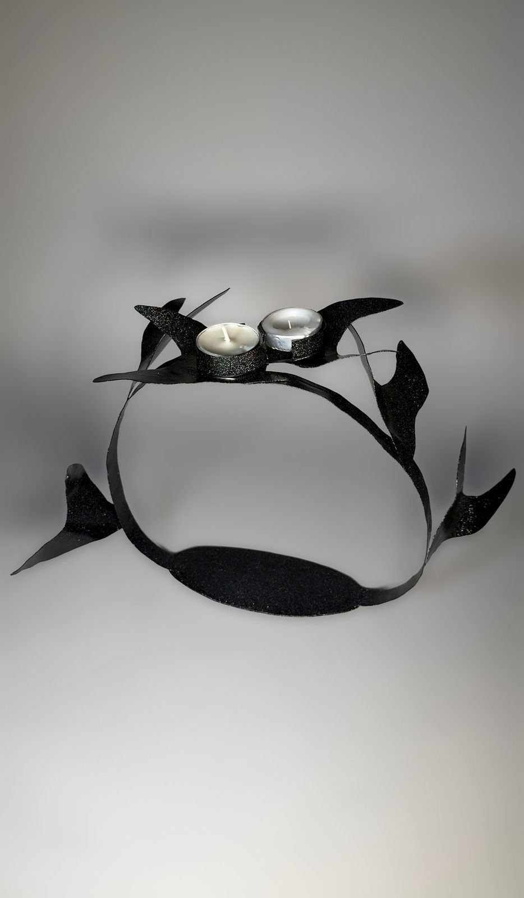
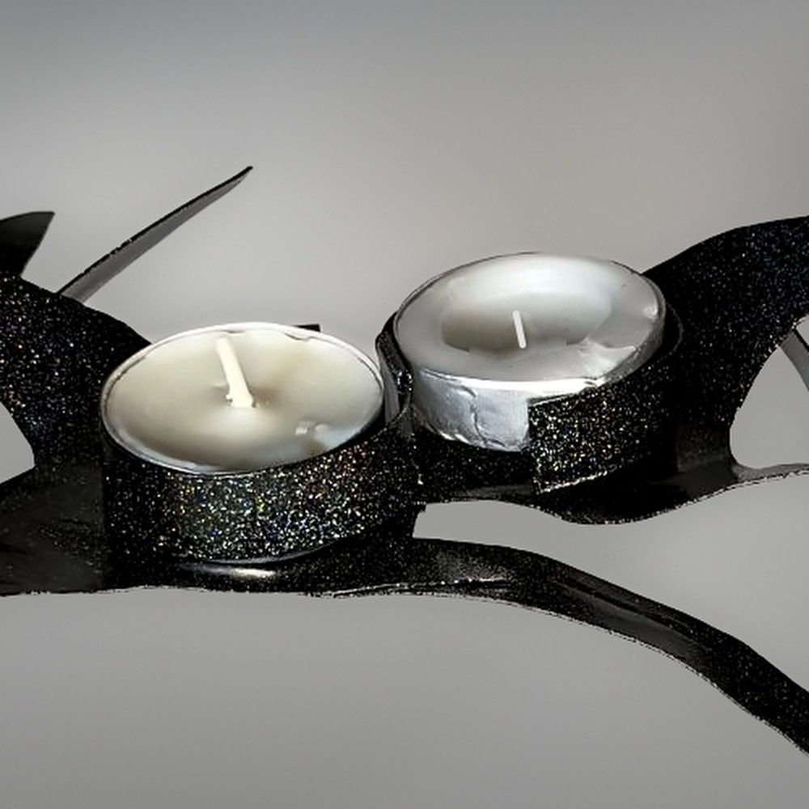
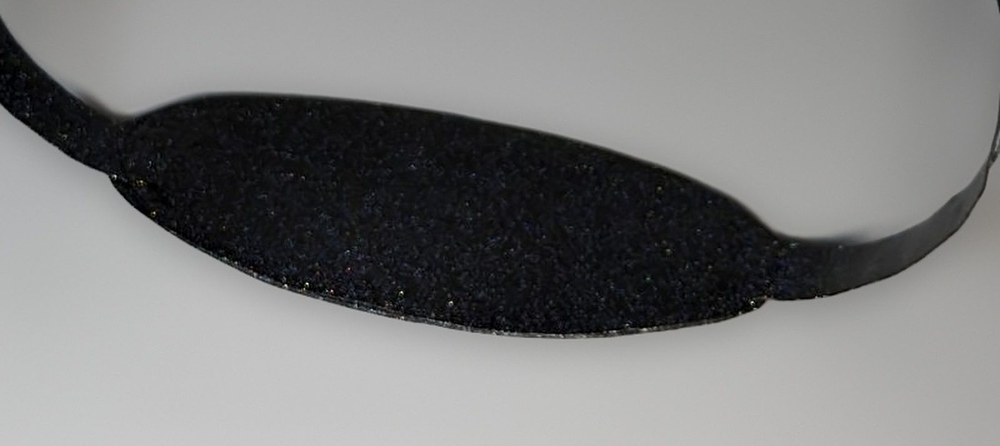

Golondrinas
A steel tealight sculpture of swallows in flight.

Hammer-formedTwo tealightsPowder-coated steelScope
A sculptural candle holder in black steel. A ribbon of swallows loops into a circle and carries two tealights at its peak.
Goals
Balance a light, airborne form with a stable base and a safe place for an open flame.
General Approach
The final piece is cut and bent from thin low-carbon steel, so it stays very light but strong, then finished in black powder coat.
Audience
A table centerpiece indoors, or a decoration for a covered patio, where the powder coat protects the steel.
From cardboard to steel.
A cardboard maquette set the form. Swallow shapes were traced from paper templates onto thin steel sheet, cut, and shaped with a ball-peen hammer at the anvil. The pieces were then spot-welded to an oval base and finished in black powder coat.
- MaterialLow-carbon steel sheet
- ProcessCut, hammer-form, spot-weld
- FinishBlack powder coat, for corrosion protection






Light, strong, built to stand.
Two tealights rest in cups built into the swallows’ meeting point. The loop of thin steel stays light but holds its shape, and the flat oval base keeps the flame steady on the table.


